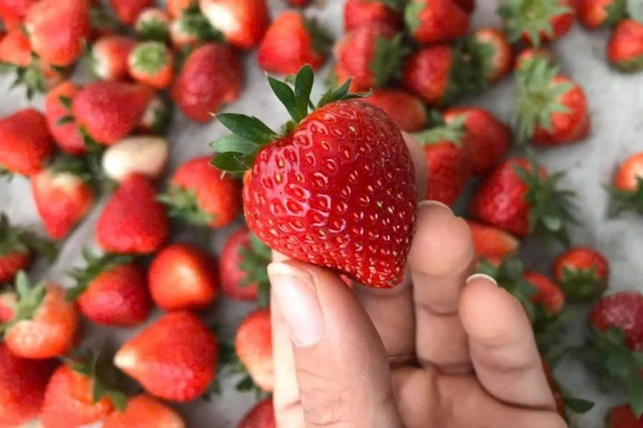

1. Chọn dựa vào màu sắc
Ưu tiên những quả có màu đỏ tươi, đều màu và mọng nước. Đây là dấu hiệu của dâu chín ngọt, giàu hương vị. Tránh các quả có đốm xanh hoặc trắng vì chưa chín, vị sẽ chua. Nếu dùng ngay, chọn dâu đỏ sậm; nếu để lâu, chọn quả hơi đỏ nhạt hơn.
2. Chọn dựa vào hình dáng
Dâu tây ngon thường có hình dáng mũm mĩm, cân đối, không méo mó hay dị dạng. Kích thước đồng đều cho thấy dâu được chăm sóc tốt. Tránh quả có đốm đen, xanh hoặc dấu hiệu dập nát.
3. Chọn dựa vào mùi hương
Mùi hương là yếu tố quan trọng. Dâu tây tươi ngon tỏa mùi thơm dịu nhẹ, ngọt ngào đặc trưng. Nếu không có mùi hoặc có mùi chua, dâu có thể chưa chín hoặc kém chất lượng. Mùi thơm càng rõ ràng, dâu càng ngọt.

4. Chọn dựa vào cuống lá
Cuống lá dâu tây tươi phải xanh mướt, bám chặt vào quả, không héo hay vàng. Đây là dấu hiệu dâu mới hái, giữ được độ tươi ngon lâu. Mẹo nhỏ: dâu có khoảng cách giữa cuống và quả lớn thường ngọt hơn.
5. Chọn dựa vào hạt
Hạt trên dâu tây ngon thường nhỏ, đều, hơi lồi và có màu vàng nhạt. Nếu hạt thưa hoặc quá lớn, dâu có thể kém ngọt. Hạt phân bố đều là dấu hiệu của quả chín mọng, chất lượng cao.
6. Chọn đúng thời điểm và nơi uy tín
Mua dâu tây vào mùa vụ (tháng 12–3) để có chất lượng tốt nhất và giá hợp lý. Tại Fruit Store, chúng tôi cam kết cung cấp dâu tây tươi ngon, nguồn gốc rõ ràng, đảm bảo an toàn và vị ngọt tự nhiên.